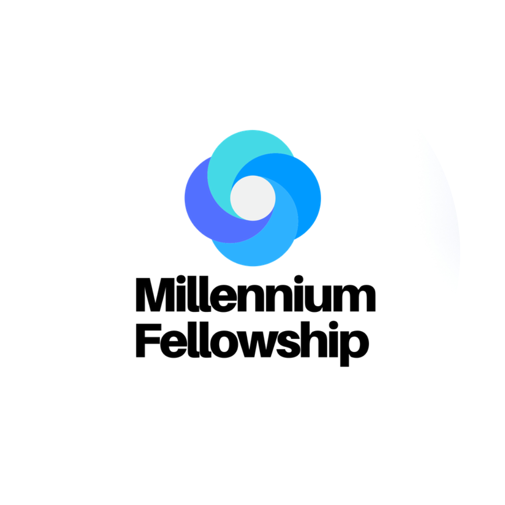
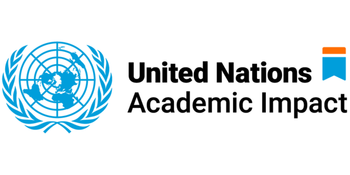
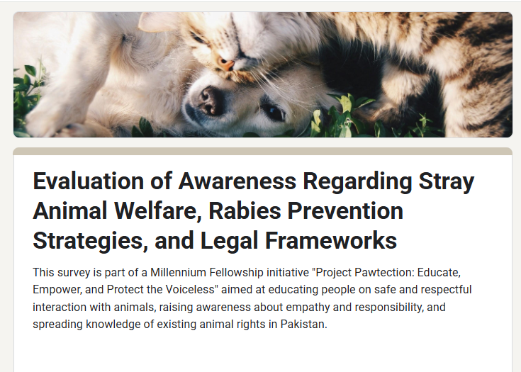
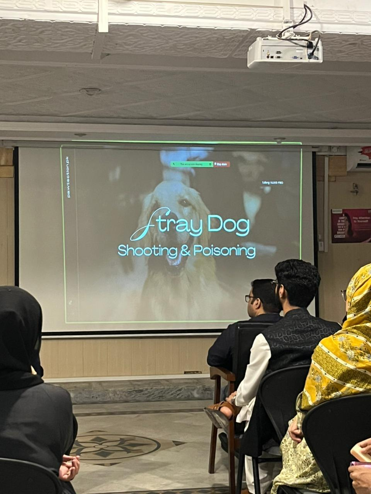
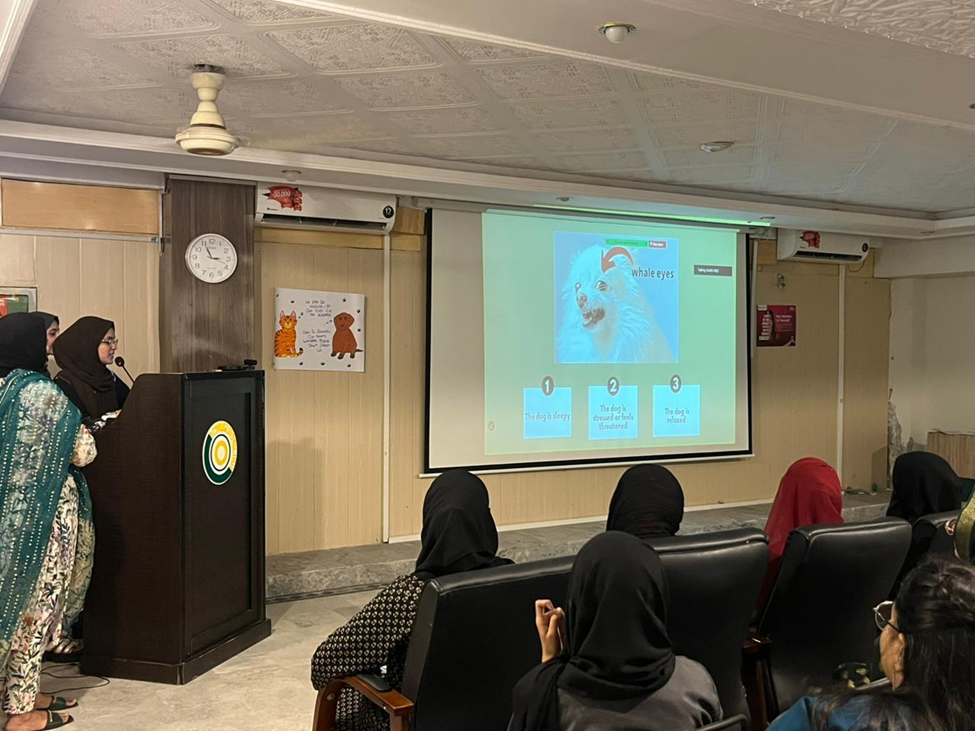
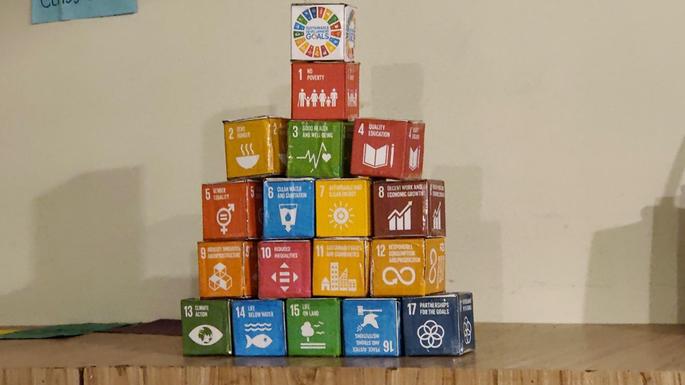
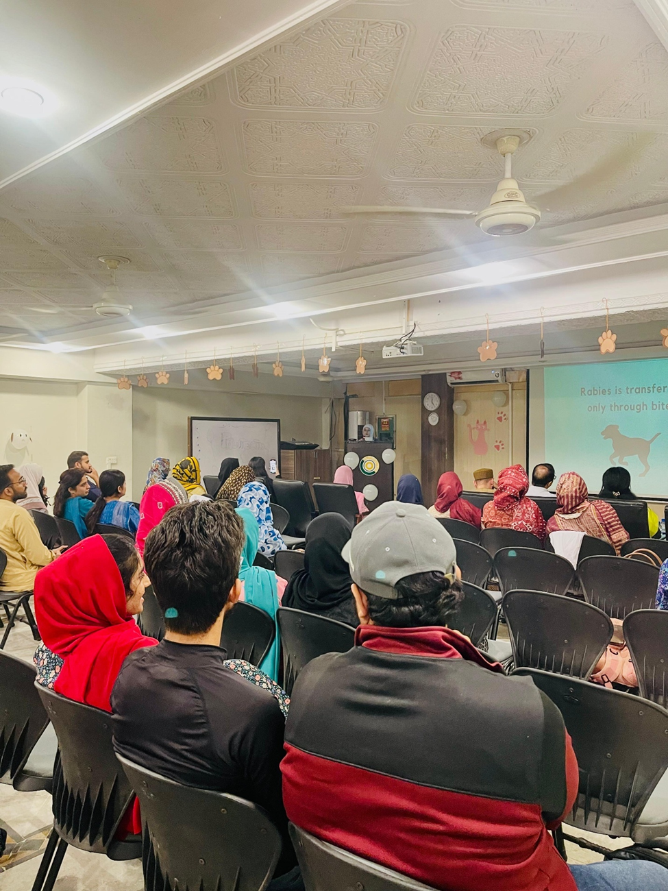
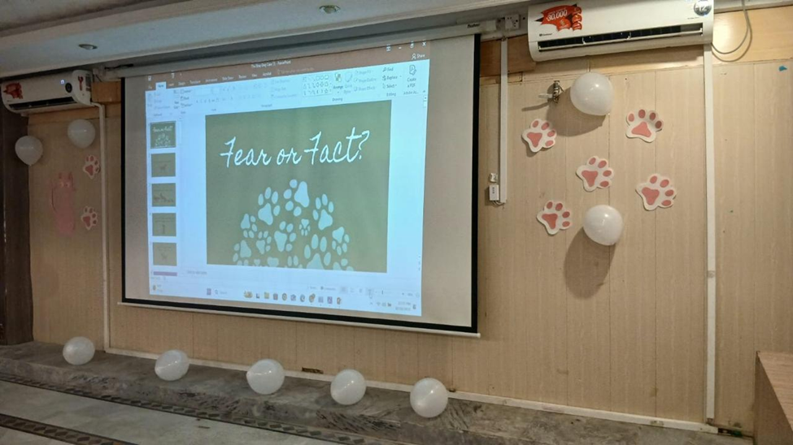
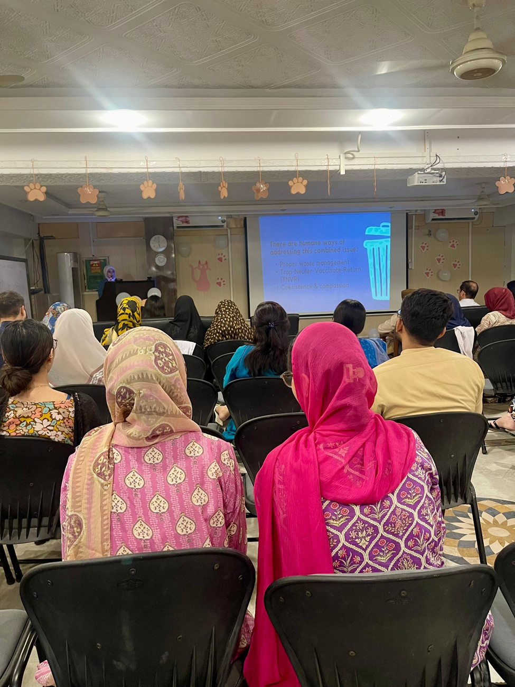
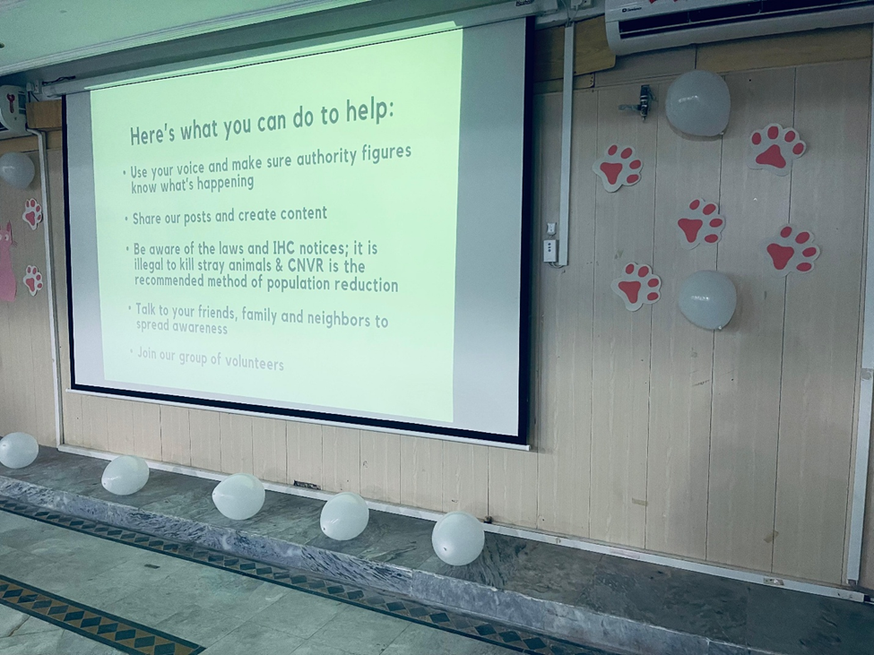

Project Pawtection.
Educate, Empower, and Protect the Voiceless.


Project Pawtection
Educate, Empower, and Protect the Voiceless.
As founder and group leader, I coordinated educational activities on animal welfare, rabies prevention and humane coexistence with stray animals.
My Millennium Fellowship profile ↗Listening, organizing, engaging.
Understanding awareness
We used a survey addressing stray-animal welfare, rabies prevention and legal frameworks to explore community awareness.
Bringing people together
I coordinated the team and educational activities, helping turn the project’s aims into structured awareness sessions.
Creating a conversation
Presentations and interactive activities invited participants to discuss animal behaviour, misconceptions and community responsibility.
Awareness begins with asking.
The questionnaire introduced our focus on safe and respectful interaction with animals, empathy and responsibility, and awareness of animal rights in Pakistan.
Original survey introduction shown alongside.

Moments from Pawtection.
Presentations, participation and the materials that brought our sessions to life.







Continuing the conversation.
Our digital campaign extended the project’s educational messages beyond the event room.
Follow @pawtection_pk ↗